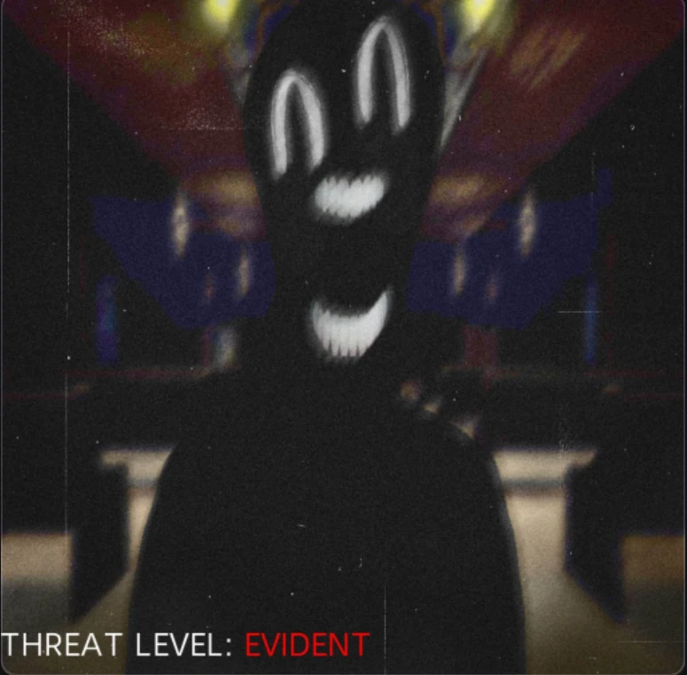

Favorite Roblox Horror Games
by Li03, Li06, Li30
Sabbie's Favorite: Anomaly Watch
Overview of Anomaly Watch:
Anomaly Watch is a Roblox horror game wherein you need to search out changes in objects such as;
distortion, extra objects, missing objects etc. This game was inspired by a Web Series on YT (Mandela Catalogue)
and I'm on Observation Duty Games. Alongside having to clear out anomalies within your area, strange figures start
to appear—Intruders. Try your best to report all anomalies and survive until 6 AM.
The game starts off by giving you a tablet where you would be reporting the anomalies you see. You must be in the
perimeter/area of the anomaly in order to get rid of it. There are three threat levels: None, Vague, Mild and Evident.
In this game, you'd definitely want to avoid the Threat Level of Evident, as you would get a warning of "TOO MANY ANOMALIES".
If you get this warning two times, it would cause an unreportable anomaly to come and get you.
This game gives off a dark atmosphere in a house (first part), an office (second part), or a church (third part).
The game builds up tension to the point that you would know that something or someone would be out there to get you.
This aspect is what makes the game more eerie and unnerving, rather than just giving you a heads up that you'll be chased.
| Maps | Unreportable Intruders | Other Intruders | Developers | Date created: |
| House | Hooded Man | Censored Figure | punitto | March 5, 2024 |
| Office | Hooded Man | Preacher | HapiKool | May 1, 2024 |
| Church | Archangel Gabriel | Disguised Intruder | wnterish | March 3, 2025 |